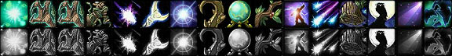
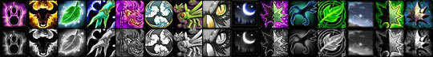
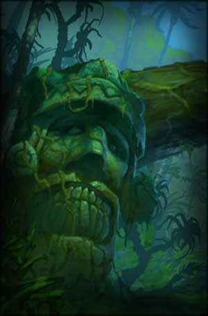
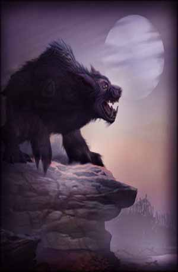
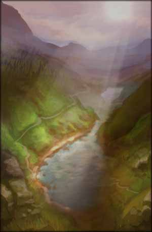

<html>
<head>
<script>
var _
var data=[]
data.n=0
_=data[0]=[]
_.n="Balance"
_=data[0][0]=[0.1]
_.n="Improved Wrath"
_.d="Reduces the cast time of your Wrath spell by $ sec."
_.m=5
_.x=1
_.y=0
_=data[0][1]=[]
_.n="Nature's Grasp"
_.d="While active, any time an enemy strikes the caster they have a 35% chance to become afflicted by Entangling Roots (Rank 6). Only useable outdoors. 1 charge. Lasts 45 sec."
_.m=1
_.x=2
_.y=0
_.z=6
_.t=['Instant cast','1 min cooldown']
_=data[0][2]=[[15,30,45,65]]
_.n="Improved Nature's Grasp"
_.d="Increases the chance for your Nature's Grasp to entangle an enemy by $%."
_.m=4
_.x=3
_.y=0
_.r=[1,1]
_=data[0][3]=[[40,70,100]]
_.n="Improved Entangling Roots"
_.d="Gives you a $% chance to avoid interruption caused by damage while casting Entangling Roots."
_.m=3
_.x=1
_.y=5
_=data[0][4]=[2]
_.n="Improved Moonfire"
_.d="Increases the damage and critical strike chance of your Moonfire spell by $%."
_.m=5
_.x=2
_.y=5
_=data[0][5]=[2]
_.n="Natural Weapons"
_.d="Increases the damage you deal with physical attacks in all forms by $%."
_.m=5
_.x=3
_.y=5
_=data[0][6]=[10]
_.n="Natural Shapeshifter"
_.d="Reduces the Mana cost of shapeshifting by $%"
_.m=3
_.x=4
_.y=5
_=data[0][7]=[25]
_.n="Improved Thorns"
_.d="Increases damage caused by your Thorns spell by $%"
_.m=3
_.x=1
_.y=10
_=data[0][8]=[]
_.n="Omen of Clarity"
_.d="Imbues the Druid with natural energy. Each of the druid's melee attacks has a chance of causing the caster to enter a Clearcasting state. The Clearcasting state reduces the Mana, Rage or Energy cost of your next damage or healing spell or offensive ability by 100%. Lasts 5 min."
_.m=1
_.x=3
_.y=10
_.r=[5,5]
_.t=['120 Mana','','Instant cast']
_=data[0][9]=[10]
_.n="Nature's Reach"
_.d="Increases the range of your Wrath, Entangling Roots, Faerie Fire, Moonfire, Starfire, and Hurricane spells by $%."
_.m=2
_.x=4
_.y=10
_=data[0][10]=[20]
_.n="Vengeance"
_.d="Increases the critical strike damage bonus of your Starfire, Moonfire, and Wrath spells by $%."
_.m=5
_.x=2
_.y=15
_.r=[4,5]
_=data[0][11]=[0.1,3]
_.n="Improved Starfire"
_.d="Reduces the cast time of Starfire by $ sec and has a $% chance to stun the target for 3 sec."
_.m=5
_.x=3
_.y=15
_=data[0][12]=[]
_.n="Nature's Grace"
_.d="All spell criticals grace you with a blessing of nature, reducing the casting time of your next spell by 0.5 sec."
_.m=1
_.x=2
_.y=20
_=data[0][13]=[3]
_.n="Moonglow"
_.d="Reduces the Mana cost of your Moonfire, Starfire, Wrath, Healing Touch, Regrowth and Rejuvenation spells by $%."
_.m=3
_.x=3
_.y=20
_=data[0][14]=[2]
_.n="Moonfury"
_.d="Increases the damage done by your Starfire, Moonfire and Wrath spells by $%."
_.m=5
_.x=2
_.y=25
_.r=[12,1]
_=data[0][15]=[]
_.n="Moonkin Form"
_.d="Transforms the druid into Moonkin Form. While in this form armor is increased by 360% and all party members within 30 yards have their spell critical chance increased by 3%. The Moonkin can only cast Balance spells while shapeshifted.<br><br>The act of shapeshifting frees the caster of Polymorph and Movement Impairing effects."
_.m=1
_.x=2
_.y=30
_.t=['35% of base Mana','','Instant cast']
_=data[1]=[]
_.n="Feral Combat"
_=data[1][0]=[1]
_.n="Ferocity"
_.d="Reduces the cost of your Maul, Swipe, Claw, and Rake abilities by $ Rage or Energy."
_.m=5
_.x=2
_.y=0
_=data[1][1]=[8,3]
_.n="Feral Aggression"
_.d="Increases the Attack Power reduction of your Demoralizing Roar by $% and the damage caused by your Ferocious Bite by $%."
_.m=5
_.x=3
_.y=0
_=data[1][2]=[3]
_.n="Feral Instinct"
_.d="Increases threat caused in Bear and Dire Bear Form by $% and reduces the chance enemies have to detect you while Prowling."
_.m=5
_.x=1
_.y=5
_=data[1][3]=[0.5]
_.n="Brutal Impact"
_.d="Increases the stun duration of your Bash and Pounce abilities by $ sec."
_.m=2
_.x=2
_.y=5
_=data[1][4]=[2]
_.n="Thick Hide"
_.d="Increases your Armor contribution from items by $%."
_.m=5
_.x=3
_.y=5
_=data[1][5]=[15,2]
_.n="Feline Swiftness"
_.d="Increases your movement speed by $% while outdoors in Cat Form and increases your chance to dodge while in Cat Form by $%."
_.m=2
_.x=1
_.y=10
_=data[1][6]=[]
_.n="Feral Charge"
_.d="Causes you to charge an enemy, immobilizing and interrupting any spell being cast for 4 sec."
_.m=1
_.x=2
_.y=10
_.t=['5 Rage','8-25 yd range','Instant','15 sec cooldown','Requires Bear Form, Dire Bear Form']
_=data[1][7]=[2]
_.n="Sharpened Claws"
_.d="Increases your critical strike chance while in Bear, Dire Bear or Cat Form by $%."
_.m=3
_.x=3
_.y=10
_=data[1][8]=[6]
_.n="Improved Shred"
_.d="Reduces the Energy cost of your Shred ability by $."
_.m=2
_.x=1
_.y=15
_=data[1][9]=[50]
_.n="Predatory Strikes"
_.d="Increases your Attack Power in Cat, Bear and Dire Bear Forms by $% of your level."
_.m=3
_.x=2
_.y=15
_=data[1][10]=[50]
_.n="Blood Frenzy"
_.d="Your critical strikes from Cat Form abilities that add combo points have a $% chance to add an additional combo point."
_.m=2
_.x=3
_.y=15
_.r=[7,3]
_=data[1][11]=[50]
_.n="Primal Fury"
_.d="Gives you a $% chance to gain an additional 5 Rage anytime you get a critical strike while in Bear and Dire Bear Form."
_.m=2
_.x=4
_.y=15
_.r=[7,3]
_=data[1][12]=[10]
_.n="Savage Fury"
_.d="Increases the damage caused by your Claw, Rake, Maul and Swipe abilities by $%."
_.m=2
_.x=1
_.y=20
_=data[1][13]=[]
_.n="Faerie Fire (Feral)"
_.d="Decrease the armor of the target by 505 for 40 sec. While affected, the target cannot stealth or turn invisible."
_.m=1
_.x=3
_.y=20
_.z=4
_.t=['30 yd range','','Instant','6 sec cooldown','Requires Cat Form, Bear Form, Dire Bear Form']
_=data[1][14]=[4,4,4]
_.n="Heart of the Wild"
_.d="Increases your Intellect by $%. In addition, while in Bear or Dire Bear Form your Stamina is increased by $% and while in Cat Form your Strength is increased by $%."
_.m=5
_.x=2
_.y=25
_.r=[9,3]
_=data[1][15]=[]
_.n="Leader of the Pack"
_.d="While in Cat, Bear or Dire Bear Form, the Leader of the Pack increases ranged and melee critical chance of all party members within 45 yards by 3%."
_.m=1
_.x=2
_.y=30
_=data[2]=[]
_.n="Restoration"
_=data[2][0]=[7]
_.n="Improved Mark of the Wild"
_.d="Increases the effects of your Mark of the Wild and Gift of the Wild spells by $%."
_.m=5
_.x=2
_.y=0
_=data[2][1]=[20]
_.n="Furor"
_.d="Gives you a $% chance to gain 10 Rage when you shapeshift into Bear and Dire Bear Form or 40 Energy when you shapeshift into Cat Form."
_.m=5
_.x=3
_.y=0
_=data[2][2]=[0.1]
_.n="Improved Healing Touch"
_.d="Reduces the cast time of your Healing Touch spell by $ sec."
_.m=5
_.x=1
_.y=5
_=data[2][3]=[14]
_.n="Nature's Focus"
_.d="Gives you a $% chance to avoid interruption caused by damage while casting the Healing Touch, Regrowth and Tranquility spells."
_.m=5
_.x=2
_.y=5
_=data[2][4]=[5]
_.n="Improved Enrage"
_.d="The Enrage ability now instantly generates $ Rage."
_.m=2
_.x=3
_.y=5
_=data[2][5]=[5]
_.n="Reflection"
_.d="Allows $% of your Mana regeneration to continue while casting."
_.m=3
_.x=2
_.y=10
_=data[2][6]=[]
_.n="Insect Swarm"
_.d="The enemy target is swarmed by insects, decreasing their chance to hit by 2% and causing 324 Nature damage over 12 sec."
_.m=1
_.x=3
_.y=10
_.z=4
_.t=['160 Mana','30 yd range','Instant Cast']
_=data[2][7]=[4]
_.n="Subtlety"
_.d="Reduces the threat generated by your Healing spells by $%."
_.m=5
_.x=4
_.y=10
_=data[2][8]=[2]
_.n="Tranquil Spirit"
_.d="Reduces the Mana cost of your Healing Touch and Tranquility spells by $%."
_.m=5
_.x=2
_.y=15
_=data[2][9]=[5]
_.n="Improved Rejuvenation"
_.d="Increases the effect of your Rejuvenation spell by $%."
_.m=3
_.x=4
_.y=15
_=data[2][10]=[]
_.n="Nature's Swiftness"
_.d="When activated, your next Nature spell becomes an instant cast spell."
_.m=1
_.x=1
_.y=20
_.r=[2,5]
_.t=['Instant','3 min cooldown']
_=data[2][11]=[2]
_.n="Gift of Nature"
_.d="Increases the effect of all healing spells by $%"
_.m=5
_.x=3
_.y=20
_.r=[6,1]
_=data[2][12]=[40]
_.n="Improved Tranquility"
_.d="Reduces threat caused by Tranquility by $%"
_.m=2
_.x=4
_.y=20
_=data[2][13]=[10]
_.n="Improved Regrowth"
_.d="Increases the critical effect chance of your Regrowth spell by $%."
_.m=5
_.x=3
_.y=25
_=data[2][14]=[]
_.n="Swiftmend"
_.d="Consumes a Rejuvenation or Regrowth effect on a friendly target to instantly heal them an amount equal to 12 sec. of Rejuvenation or 15 sec. of Regrowth."
_.m=1
_.x=2
_.y=30
_.r=[8,5]
_.t=['20% of base Mana','40 yd range','Instant cast','15 sec cooldown']
</script>
</head>
<body>
<!--[if lte IE 6]>






<![endif]-->
</body>
</html>